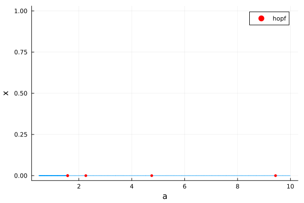
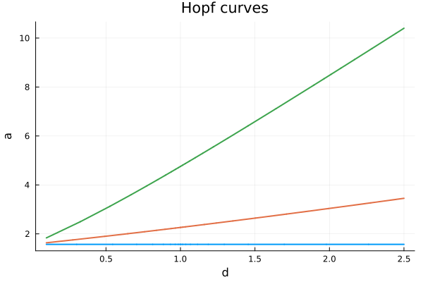
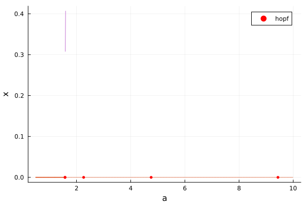
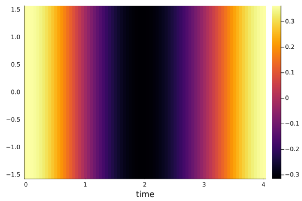

Hutchinson with Diffusion (codim2, sparse matrices, periodic orbits)
Consider the Hutchinson equation with diffusion
\[\begin{aligned} & \frac{\partial u(t, x)}{\partial t}=d \frac{\partial^2 u(t, x)}{\partial x^2}-a u(t-1, x)[1+u(t, x)], \quad t>0, x \in(0, \pi), \\ & \frac{\partial u(t, x)}{\partial x}=0, x=0, \pi \end{aligned}\]
where $a>0, d>0$.
Problem discretization
We start by discretizing the above PDE based on finite differences.
using Revise, DDEBifurcationKit, Plots, SparseArrays, LinearAlgebrausing BifurcationKitconst BK = BifurcationKitfunction Hutchinson(u, ud, p) (; a, d, Δ) = p d .* (Δ * u) .- a .* ud.u[1] .* (1 .+ u)enddelaysF(par) = [1.]Bifurcation analysis
We can now instantiate the model
# discretisationNx = 200; Lx = pi/2;X = -Lx .+ 2Lx/Nx*(0:Nx-1) |> collecth = 2Lx/NxΔ = spdiagm(0 => -2ones(Nx), 1 => ones(Nx-1), -1 => ones(Nx-1) ) / h^2; Δ[1,1]=Δ[end,end]=-1/h^2We are now ready to compute the bifurcation of the trivial (constant in space) solution:
# bifurcation problempars = (a = 0.5, d = 1.0, τ = 1.0, Δ = Δ, N = Nx)x0 = zeros(Nx)prob = ConstantDDEBifProblem(Hutchinson, delaysF, x0, pars, (@optic _.a))optn = NewtonPar(eigsolver = DDE_DefaultEig())opts = ContinuationPar(p_max = 10., p_min = 0., newton_options = optn, ds = 0.01, detect_bifurcation = 3, nev = 5, dsmax = 0.2, n_inversion = 4)br = continuation(prob, PALC(), opts; normC = norminf)br ┌─ Curve type: EquilibriumCont
├─ Number of points: 42
├─ Type of vectors: Vector{Float64}
├─ Parameter a starts at 0.5, ends at 10.0
├─ Algo: PALC [Secant]
└─ Special points:
- # 1, hopf at a ≈ +1.57668056 ∈ (+1.56784173, +1.57668056), |δp|=9e-03, [converged], δ = ( 2, 2), step = 10
- # 2, hopf at a ≈ +2.26389996 ∈ (+2.26169025, +2.26389996), |δp|=2e-03, [converged], δ = ( 2, 2), step = 13
- # 3, hopf at a ≈ +4.75534651 ∈ (+4.75424166, +4.75534651), |δp|=1e-03, [converged], δ = ( 2, 2), step = 22
- # 4, hopf at a ≈ +9.43550952 ∈ (+9.43109010, +9.43550952), |δp|=4e-03, [converged], δ = ( 2, 2), step = 39
- # 5, endpoint at a ≈ +10.00000000, step = 41
We note that the first Hopf point is close to the theoretical value $a=\frac\pi 2$. This can be improved by increasing opts.n_inversion.
We can now plot the branch
scene = plot(br)
Performance improvements
The previous implementation being simple, it leaves a lot of performance on the table. For example, the jacobian is dense because it is computed with automatic differentiation without sparsity detection.
We show how to specify the jacobian and speed up the code a lot.
# analytical jacobianfunction JacHutchinson(u, p) (;a, d, Δ) = p # we compute the jacobian at the steady state J0 = d * Δ .- a .* Diagonal(u) J1 = -a .* Diagonal(1 .+ u) return J0, [J1]endprob2 = ConstantDDEBifProblem(Hutchinson, delaysF, x0, pars, (@optic _.a); J = JacHutchinson)optn = NewtonPar(eigsolver = DDE_DefaultEig())opts = ContinuationPar(p_max = 10., p_min = 0., newton_options = optn, ds = 0.01, detect_bifurcation = 3, nev = 5, dsmax = 0.2, n_inversion = 4)br = continuation(prob2, PALC(), opts; normC = norminf)br ┌─ Curve type: EquilibriumCont
├─ Number of points: 42
├─ Type of vectors: Vector{Float64}
├─ Parameter a starts at 0.5, ends at 10.0
├─ Algo: PALC [Secant]
└─ Special points:
- # 1, hopf at a ≈ +1.57668056 ∈ (+1.56784173, +1.57668056), |δp|=9e-03, [converged], δ = ( 2, 2), step = 10
- # 2, hopf at a ≈ +2.26389996 ∈ (+2.26169025, +2.26389996), |δp|=2e-03, [converged], δ = ( 2, 2), step = 13
- # 3, hopf at a ≈ +4.75534651 ∈ (+4.75424166, +4.75534651), |δp|=1e-03, [converged], δ = ( 2, 2), step = 22
- # 4, hopf at a ≈ +9.43550952 ∈ (+9.43109010, +9.43550952), |δp|=4e-03, [converged], δ = ( 2, 2), step = 39
- # 5, endpoint at a ≈ +10.00000000, step = 41
We can compute the Hopf normal form
get_normal_form(br, 1)SuperCritical - Hopf bifurcation point at a ≈ 1.5766805597910794.
Frequency ω ≈ 1.572488487324061
Period of the periodic orbit ≈ 3.9956955855822027
Normal form z⋅(iω + a⋅δa + b⋅|z|²):
┌─ a = 0.45209288868667374 + 0.2864293305626691im
└─ b = -0.0016905496698796374 - 0.0020527013807187288im
Continuation of Hopf points
brhopfs = [continuation(br, i, (@optic _.d), ContinuationPar(br.contparams, detect_bifurcation = 2, p_min = 0.1, p_max = 2.5, max_steps = 1000); verbosity = 2, detect_codim2_bifurcation = 2, plot = true, bothside = true, jacobian_ma = BK.MinAugMatrixBased(), ) for i = 1:3]plot(brhopfs..., title = "Hopf curves")
Computation of the periodic orbit
br_pocoll = @time continuation( br, 1, ContinuationPar(br.contparams; detect_bifurcation = 0, max_steps = 3, newton_options = NewtonPar(eigsolver = DDE_DefaultEig(), verbose = true), plot_every_step = 1), Collocation(20, 4; jacobian = BK.FullSparse()); verbosity = 2, plot = true, normC = norminf, )plot(br, br_pocoll)
We can plot a solution from the curve
sol = BK.get_periodic_orbit(br_pocoll, 3)heatmap(sol.t, X, sol[:,:], xlabel = "time")